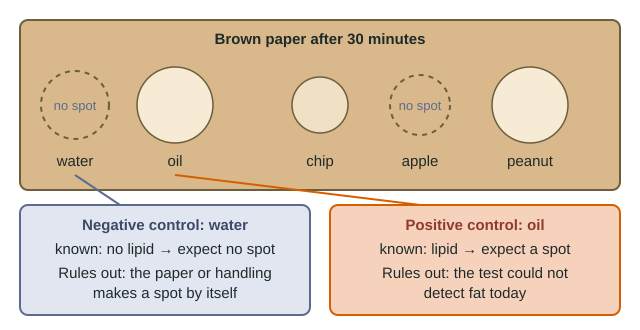

Two ways a test can lie
Rub a potato chip on brown paper, wait, and hold it to the light: a see-through spot means fat. Lipids such as triglycerides are nonpolar and hydrophobic, so they soak into the paper fibers and do not evaporate at room temperature. Simple. But any test can mislead you in two directions:
- a false positive: the test says "yes" when the substance is not there (water also makes paper see-through while it is wet);
- a false negative: the test says "no" when the substance is there (too little sample, the wrong paper, a smear wiped off).
Controls are samples whose answer you already know, run through exactly the same steps. One kind catches each lie.
Worked example: choosing and justifying controls

Test: rub each sample on brown paper, wait 30 minutes, look for a lasting see-through spot.
Negative control: distilled water, rubbed on the same paper in the same way. Justification: "Water contains no lipid, so if it leaves no spot after 30 minutes, a lasting spot from a food is not caused by moisture, the paper or our handling."
Positive control: vegetable oil, rubbed on the same paper in the same way. Justification: "Oil is a known lipid, so if it leaves a spot, the test can detect fat under today's conditions, and a 'no' from a food is believable."
Results: water, no spot; oil, large spot; chip, spot; apple, no spot; peanut, large spot. Both controls behaved, so the class can conclude the chip and peanut contain fat and the apple contains little or none.
Notice the pattern in each justification: known to be [negative/positive], so if it gives [the expected result], it rules out [a specific error]. Graders award the point for the "rules out" part. "Water is the control because it is the control" scores nothing.
| Negative control | Positive control | |
|---|---|---|
| Contains the substance? | No, known to lack it | Yes, known to have it |
| Expected result | "No" | "Yes" |
| Rules out | False positives from the method, materials or contamination | False negatives from a test that is not working |
| If it fails | Positive results are untrustworthy | Negative results are untrustworthy |
| Starch test example | Distilled water + iodine stays orange-brown | Starch solution + iodine turns blue-black |
When a control fails
A student tests five tubes with iodine, which turns blue-black with starch. Starch solution turns blue-black (good). But distilled water also turns blue-black, and so does dissolved table sugar, which is sucrose, a disaccharide, not starch. The failed negative control is the alarm: something other than the samples is making the color. Here every tube was rinsed in the same tub of wash water, so starch carried over into all of them.
A failed control means the whole run is suspect. You do not keep the "interesting" results and drop the control. You find the cause, remove it (separately rinsed tubes) and repeat everything, controls included.
Confounding variables
A confounding variable is a second difference between groups that could also change the result. Two groups compare the fat in two brands of chips by the size of their grease spots, but group 1 uses 5.0 g of chips and group 2 uses 2.0 g and reads the paper an hour later. Bigger samples make bigger spots, and the reading time changes how much a water spot has faded. Either factor could explain a difference, so brand cannot be credited.
A factor is confounding only if it both differs between groups and could plausibly affect the dependent variable. Different pans on different stoves when comparing the melting of butter and olive oil: confounding (they change how heat reaches the fat). Butter and olive oil bought from different stores: different, but not plausibly linked to melting point.
Rules for a good control
- It goes through every step the test samples go through: same paper, same rubbing, same wait. An untouched sheet is not a control for a test that involves rubbing and wetting.
- Its answer is known in advance. The unknown food can never be a control.
- It differs from the test samples in one respect: the presence or absence of what you are detecting.
- Its result is reported, especially if it fails.